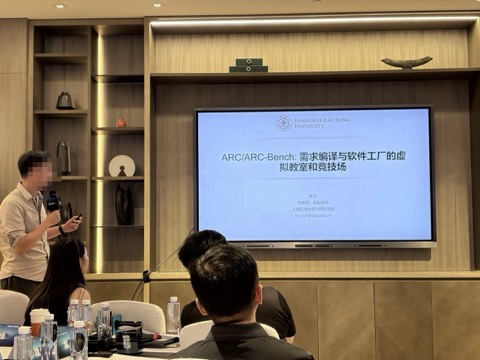
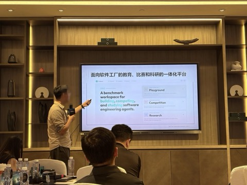
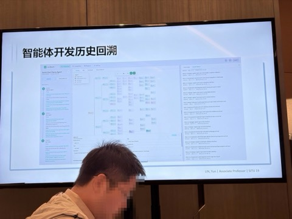
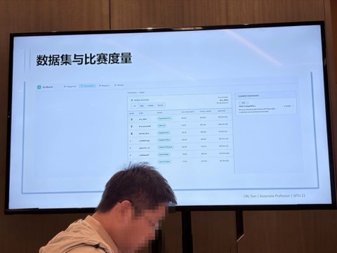
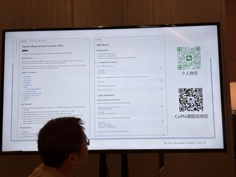

音频围绕构建软件功能智能体平台展开，介绍了平台的目标、界面设计、运行流程、追溯关系维护、可视化交互、数据集开源、评估系统等内容，以及后续开源项目的计划，内容如下：
这是林云「需求编译」理念的产品化落地——Arc / Artbench：一个让学生上传 agent 系统、对复杂需求文档编译出可运行软件、并自动维护「需求-模块-测试-数据库」追溯关系的竞技场。它把抽象方法论变成了可教、可比、可开源众包的平台，是把学术想法工程化的样板。




